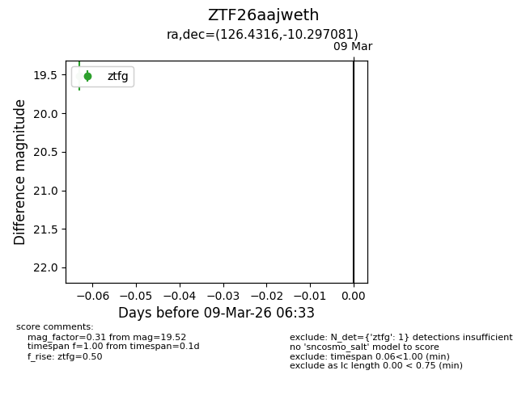
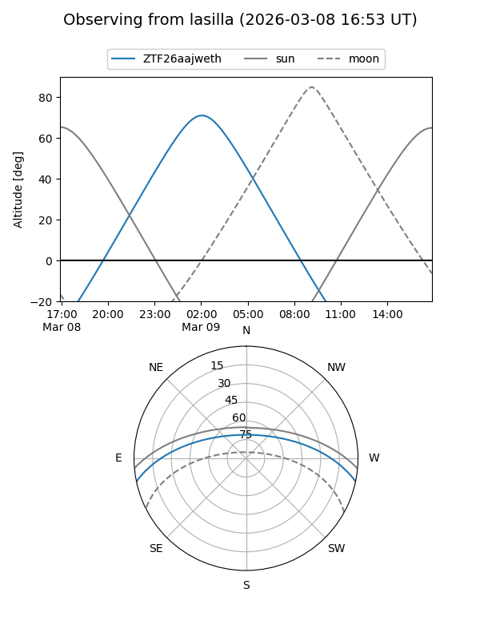
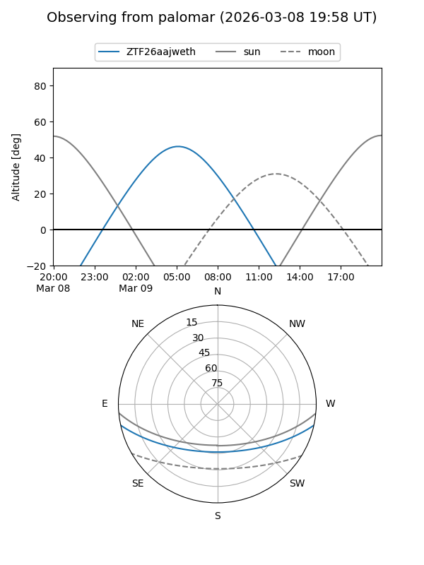

ZTF26aajweth
Target ZTF26aajweth at 2026-03-09 06:34
Aliases and brokers:
FINK: link
Lasair: link
ALeRCE: link
alt names
ZTF26aajweth (ztf,fink_ztf)
Coordinates:
equatorial (ra, dec) = 126.4316,-10.29708
equatorial (HMS+DMS) = 08:25:43.59,-10:17:49.49
galactic (l, b) = (233.5062,+15.58508)
Flags:
Photometry:
last ztfg=19.52
1 ztfg detections
Lightcurve

Visibility


Additional plots